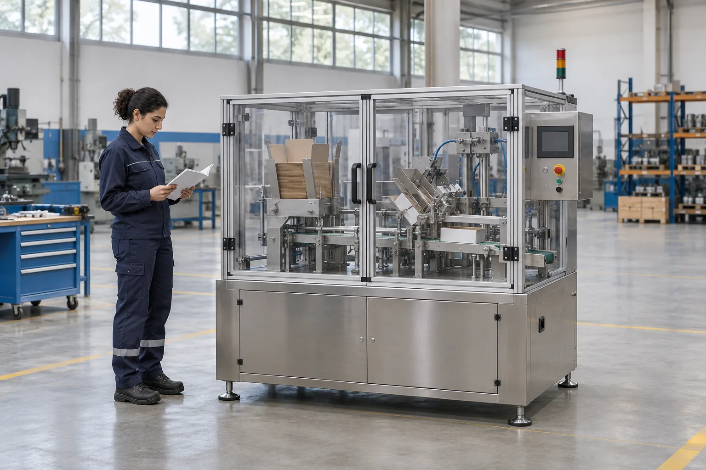

A buyer near Rotterdam orders two carton folders from the same workshop in Bursa. Both purchase orders bear a December date. One finished machine is supplied to the European importer before 20 January 2027. Its twin still lacks a control cabinet when the deadline passes. The machines may look identical when they eventually stand side by side, yet the manufacturer may owe a different declaration for each. Which event should the buyer establish before releasing the final instalment?
Start with the individual unit. The EU Machinery Regulation was adopted on 14 June 2023 and published on 29 June. Its principal application date is 20 January 2027. Some provisions apply earlier. For example, the October 2026 date in Article 50 concerns national penalties and notification by Member States. It does not give a manufacturer an October cut-off for ordinary deliveries. For a November purchasing meeting, the immediate task is to identify outstanding machines, determine where each transaction stands and agree what evidence the buyer will receive.
Draw the transaction before choosing the declaration
Sketch the parties on paper. A Turkish builder takes instructions from a Dutch distributor, a Belgian warehouse stores the equipment and a French food producer expects installation. Who will first supply the completed item for use or distribution on the Union market? Who arranges importation? Will the French customer assemble several modules into a working line? The trading names on invoices can obscure these roles, especially where a group's logistics subsidiary books the lorry but never buys or supplies the equipment.
The European Commission’s Blue Guide explains why a catalogue model, advance payment or factory reservation cannot establish first placement for everything in a production run. An offer or agreement concerning an individual product after manufacture can be relevant even before physical handover. A commitment to build a future machine is different. Record the transaction and its context, including the EU destination, the identities of the parties and what rights the arrangement actually transfers. Customs documents are valuable corroboration. Arrival at a transit depot, taken alone, does not establish placement.
Article 52 protects subsequent availability of products lawfully placed under Directive 2006/42/EC before the transition date. The word lawfully matters. A retrospectively typed delivery note cannot cure a conformity assessment that was missing when the machine entered the market. If the timeline is ambiguous, preserve the underlying records and budget for a review against the later requirements. Resist commercial pressure to pick whichever date produces the shorter checklist.
Establish what the Turkish factory is supplying
Ask engineering to describe the deliverable in one sentence using an action verb. A carton folder receives a blank, scores the material and folds it to shape. A feeder intended solely for incorporation into a larger assembly might be unable to perform its specific application independently. A bare motor sold separately raises a different classification question again. Labels such as module, attachment or turnkey package in the quotation are clues. Classification follows the item's actual purpose, configuration and degree of completion.
For finished machinery within the Regulation, Article 10 sets out manufacturer duties including the applicable assessment, technical documentation, EU declaration of conformity and CE marking. Article 11 deals separately with partly completed machinery. Its documentation includes assembly instructions and an EU declaration of incorporation. The latter allows an integrator to identify which essential requirements were applied and fulfilled. A component may also fall under another Union act, so check the legal basis of any mark already on it before drawing conclusions about the whole assembly.
Imagine a bottling plant buying a cap feeder and a conveyor from different builders. Both vendors can describe their own equipment accurately while leaving open who assesses the combined installation. The procurement schedule should name the system integrator, define the interfaces and identify the party preparing the declaration for the completed assembly where required. List the handoff information the integrator needs, the date for translation and the acceptance test to be witnessed. A promise that both suppliers will cooperate offers little help if neither has priced that work.
Build a defensible record for each serial number
A concise register can fit on one screen. Give each unit a line for identifier, configuration, intended use, end destination, manufacturing completion, evidence of first EU supply, applicable instrument and unresolved issues. Link the source documents instead of copying dates between spreadsheets. A serial number assigned when steel was cut is an excellent locator and weak evidence of a finished machine. A signed test report becomes useful when it states what configuration was tested, by whom and what remained outstanding.
Take the Bursa example. Machine A passed its specified checks on 12 January, was identified in a subsequent supply agreement, and its importer has the matching records. Review those facts against the Directive, including conformity at placement. Machine B was described on the same framework order but its cabinet arrived on 24 January. The December signature cannot establish earlier placement of that unfinished unit as a finished folder. Prepare its Regulation file and ask whether revised instructions or a different assessment route affect the delivery timetable. Both examples assume genuine commercial transactions and scope within EU machinery legislation.
A more awkward case is an optional print head. The factory photograph shows a plain machine; the acceptance protocol refers to integrated printing. Ask for the revision history, as-built drawing, packing list and correspondence authorising the change. Distinguish a clerical discrepancy from a configuration never assessed. Give the compliance reviewer authority to delay dispatch until the documents and physical identity match. This is also a sensible point to revisit the buyer's supply agreement.
Review the evidence the importer can actually obtain
A manufacturer keeps responsibility for its technical work. An importer has its own checks before placing equipment on the market. A contractual term allocating freight, customs clearance or insurance will not answer whether the declaration names the correct entity, the instructions cover the destination language or the chosen procedure fits the category. Request the declaration draft early enough to correct a model suffix or an obsolete address without holding a loaded trailer at the gate.
Agree on a document index rather than demanding that a vendor email every drawing to every buyer. Specify which deliverables travel with the equipment, which confidential items the builder retains and how relevant information will reach a competent authority if requested. Include a usable contact at the Turkish factory and a deputy during holidays. Decide how changes to a supplier's business name, repository or engineering subcontractor will reach the importer. This arrangement protects access while avoiding unnecessary circulation of proprietary designs.
A useful review starts with three independent documents. Compare the plate photographed at final inspection, the declaration signed by the authorised person and the instruction cover received by the customer. Does the family name cover this serial range? Is the quoted revision intelligible to the maintenance supervisor? Can the assessor explain an apparent difference between the order and the nameplate? Record the answer beside the discrepancy and retain the original version alongside the corrected copy. That history helps a regulator understand the sequence months later.
Test the instructions as a customer would
The Regulation allows digital instructions under conditions. For finished machinery, Article 10 requires an indication of how to access them and a format that lets users print, download and save them. Online availability must cover the expected lifetime and at least ten years after placement. A purchaser who requests paper instructions at purchase must receive them free within a month. Essential safety information must be provided on paper for products intended for, or reasonably foreseeably used by, non-professional users. A sales description calling a product industrial does not resolve that factual question.
Test the manufacturer's proposal from a visitor's device. Scan the provided link on a phone without a staff login, select the destination language, save the file and reopen it offline. Verify that the instructions match the installed revision as well as the model. Can a maintenance contractor find a diagram when mobile reception fails inside the building? Would an address printed only on disposable shrink wrap survive unpacking? Record failures as acceptance items with an owner and a date. This simple exercise can reveal a contractual gap while the builder can still fix it cheaply.
Consider continuity as well as first access. A marketing department may redesign its website, a translation contractor may close its portal, or a hosting subscription may lapse following an acquisition. Negotiate responsibility for retaining versions, redirecting published links and supplying a readable replacement when a customer reports a broken address. Keep identification on printed material consistent with the digital edition. An invoice for translation proves expenditure, whereas checking a saved document against the approved source establishes what the operator can read.
Plan the acceptance meeting around unresolved decisions
Have procurement circulate a short factual pack before the call. Engineering describes the assembly boundary. Quality identifies the serials that passed inspection. Logistics shows the route and custody changes. The importer explains the basis for the proposed placement date. Finance lists payments contingent on particular evidence. Counsel can then address actual uncertainty, such as whether a handover concerned a finished unit or merely an opportunity to inspect a prototype. The meeting should produce an owner for each open point and a clear release or hold decision.
Suppose the buyer rents storage in Germany because its hall is under renovation. The freight forwarder can show the unloading date but cannot say whether the machine was supplied to the buyer, remained under the seller's control or moved under a special customs procedure. Obtain the storage agreement and the subsequent release instruction. Check which serial the documents cover. An accountant's booking date helps locate correspondence but should be labelled as such. If necessary, record the competing interpretations and seek a determination before relying on transitional protection.
A staged contract can accommodate delay without distorting the history. Separate the instalment for completion of fabrication from the payment for approved documentation, commissioning and operator training. Define the event that releases each amount and the person authorised to record exceptions. A factory witness might reasonably sign for mechanical completion while reserving language review. That signature should describe its limited scope. Commercial acceptance and regulatory conformity serve different purposes even when the same technician supplies evidence for both.
Hand over a file the next owner can use
At closing, ask someone outside the purchasing team to reconstruct the journey of one unit. Give them the serial, an unfamiliar destination and fifteen minutes. They should find the applicable law, identify the manufacturer and importer, retrieve the signed declaration, locate the matching manual and explain the evidence supporting the date. If the trail ends at a departing employee's mailbox, transfer the relevant records to a maintained location and repeat the exercise.
Record remaining service commitments in the customer's handover note. Include who receives reports of unsafe behaviour, who supplies replacement documentation and where the installer reports a configuration change. A buyer ordering machinery in November can settle these questions with competing suppliers still at the table. Once equipment has crossed a border, a missing signature may be easy to collect; an honest contemporaneous record of what the factory delivered is much harder to reconstruct.
Frequently asked questions
Does a December order automatically qualify both machines for the earlier rules?
Assess each identifiable unit and when it was first lawfully placed on the EU market. An agreement to manufacture future equipment is insufficient by itself.
What documents accompany partly completed machinery under the Regulation?
Article 11 provides for assembly instructions and an EU declaration of incorporation. The integrator should also establish who assesses the completed assembly.